Robots d’accueil
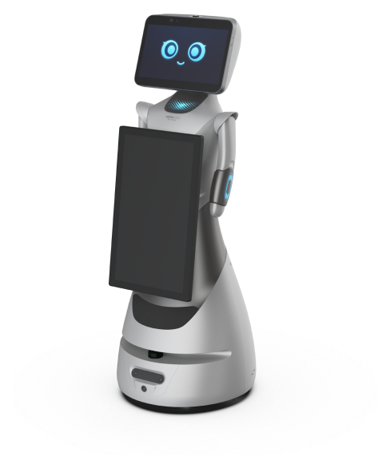
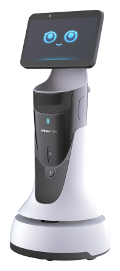
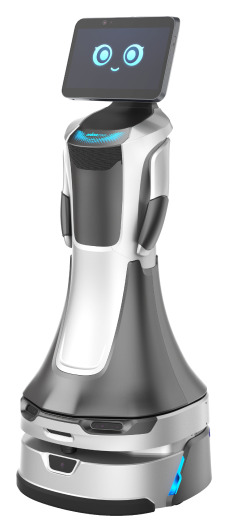
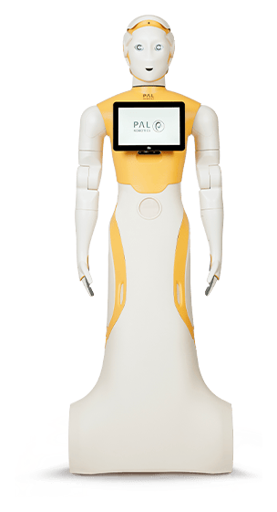
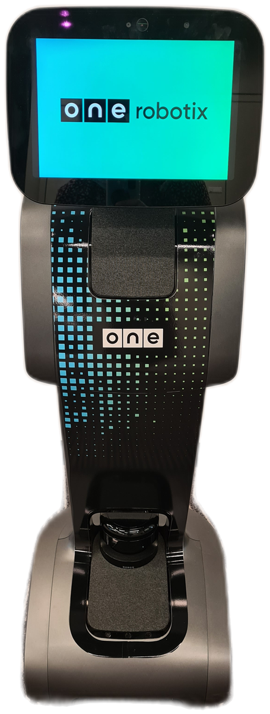
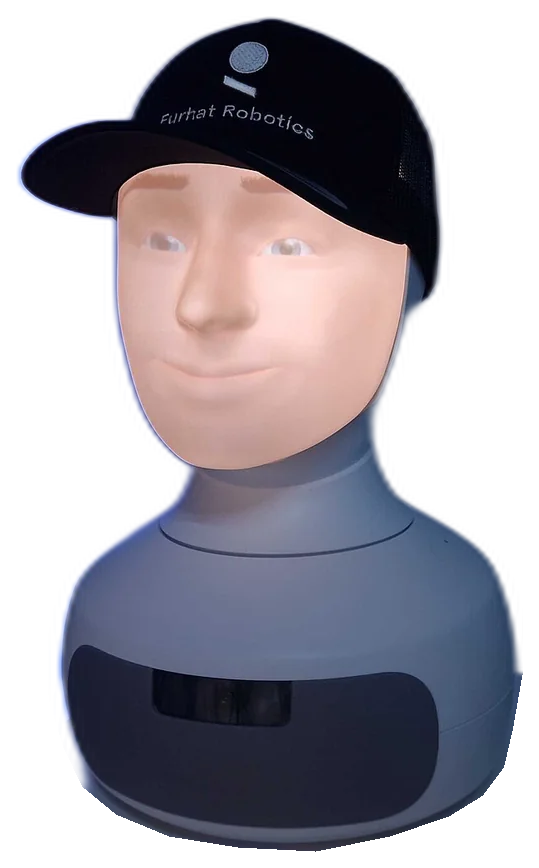
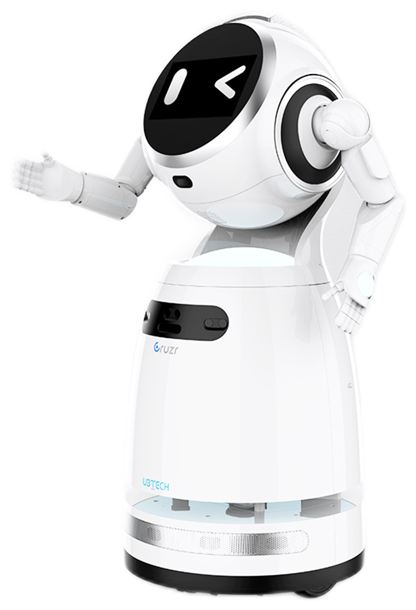
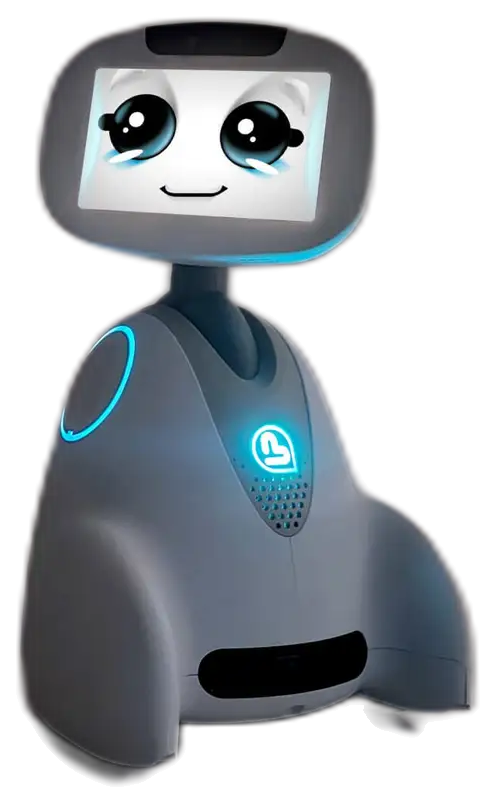
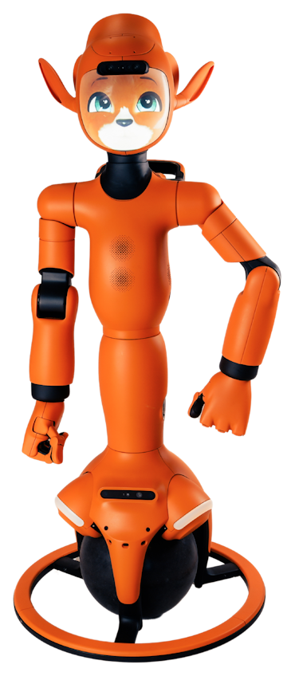
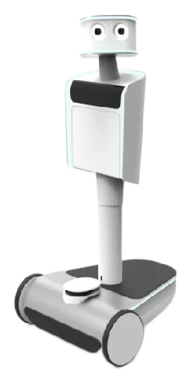
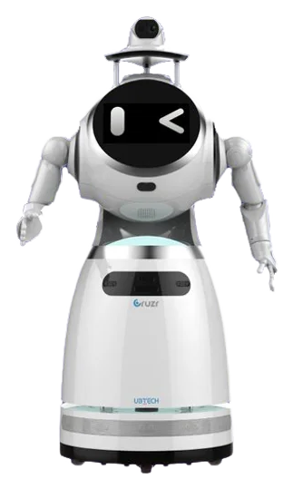
1 / 11
Robotique de service
Accueil, transport ou entretien : explorer les fonctions concrètes d’un robot avant de choisir un modèle.
 Illustration de concept · Aucun modèle commercial représenté
Illustration de concept · Aucun modèle commercial représenté
Accueil, ménage, humanoïdes, service et livraison, compagnie.
Quelques repères
Ces pages présentent des univers et des usages possibles. Les modèles, leur disponibilité et les prestations adaptées sont à préciser lors d’un échange.
La circulation, les surfaces, les obstacles, les personnes présentes et les contraintes de sécurité doivent être examinés avant de retenir une solution.
Oui : définir une seule tâche et des critères observables permet d’évaluer l’intérêt du projet avant d’élargir son périmètre.
La suite commence par un échange
Partons de votre quotidien pour définir un projet qui a du sens.